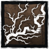
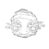

O MÉDICO
Até as tarefas mais simples ficam dificílimas quando se está sob as garras da loucura.
Os métodos perturbadores do Médico mergulham os Sobreviventes na insanidade, enchendo o ar com seus gritos desvairados e revelando suas posições. Nada impede um pulo pela janela como uma dose saudável de Terapia de Choque.
Raio de Terror: 32m
Velocidade: 4.6 m/s
Altura: Alto
Poder:
Faíscas de Carter

Leve os Sobreviventes à loucura com a Terapia de Choque e a Explosão Estática.
Cada nível de Loucura debilita ainda mais os Sobreviventes com diversas aflições, sendo forçados a sair dessa antes de poderem reparar, curar, sabotar, buscar ou purificar totens.
Uma Terapia de Choque na hora certa pode impedir que Sobreviventes pulem ou derrubem barricadas.
VANTAGENS
Presença Esmagadora |
Quando os Sobreviventes usarem itens dentro do seu Raio de Terror, os itens se esgotarão mais rápido. |
Monitore e Abuse |
Seu Raio de Terror diminuirá quando você não estiver em perseguição, mas seu campo de visão aumentará levemente. Ao entrar em perseguição, o raio de terror aumentará, e o campo de visão volta ao normal. |
Sobrecarga |
Após você danificar um gerador, o próximo Sobrevivente a interagir com ele será obrigado a passar por um Teste de Perícia difícil. |